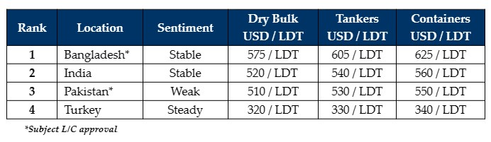

inWeekly Demolition Reports03/07/2023

Ongoing Eid holidays and a serious lack of tonnage have meant a much quieter week in the ship-recycling industry, asthe ongoing lull (in terms of new sales and activity) firmly descends across the markets.
Therefore, any price ideas that are still forthcoming remain noticeably below the market and not worth considering at this time and until we see liquidity issues ease in the industry, we are not likely to make much sense out of local markets.
Instead, the industry continues to move ahead with other improvements, such as the historical news from Bangladesh and its recent accession to the Hong Kong Convention, another positive step forward to finally getting the convention enter into force in another market – certainly a big win for the overall industry. In fact, Bangladesh has become the latest country (amongst 20 others) to ratify the convention, and this is indeed an important milestone for the country.
Conversely, Pakistan is at real risk of being left behind, having failed to follow India and Bangladesh in upgrading their facilities to follow HKC guidelines / requirements, atop the ongoing profound economic, political, and financial chaos that is currently afflicting the nation – Gadani really has become virtually redundant as a viable sub-continent recycling destination.
India has endured another steady if unspectacular week, as prices remain muted and well below expectations, mixed in with the lack of tonnage and no fresh arrivals at the waterfront, leaving another week of unfulfilled sales.
On the Western front, Turkey spends a quiet week on holidays, with no real movement locally, as Eid celebrations get underway.
Overall, tonnage flow has, as expected, cooled over the recent month and the industry is certainly hoping on some post-holiday improvement in prices, in order to get the industry moving again.
For week 26 of 2023, GMS demo rankings / pricing for the week are as below.

📄 Download PDF: Ship-recycling-market-insight-week-26-2023-Summer-Lull-ing.pdfSource: GMS,Inc. ,https://www.gmsinc.net/gms_new/index.php/web